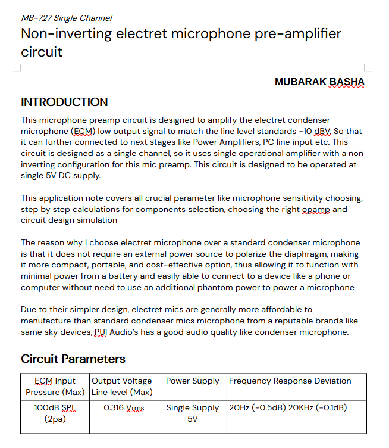

Introduction
Welcome, buddies! In today's article, we're going to build a studio-quality electret mic pre-amplifier that sounds awesome, it'll rival professional studio microphones!
What?? I know what you're thinking: Building a mic preamp with a cheap ECM instead of an expensive condenser mic? " Aren't there already tons of videos and diagrams showing how to build one?"
Yes, it's true preamp circuits are all over the internet But here's the catch: most of them don't deliver the professional-quality sound you're hoping for. Even if the circuit works, the audio quality often includes excessive noise, distortion, or an unnatural tone.
In my opinion, the problem isn't the mic; it's the design of the preamp circuit. Even a generic ECM mic that costs around 20 cents can sound great if the circuit is properly designed and optimized for it. That's exactly what we're going to do in this video: design a circuit that pushes the limits of what a cheap electret mic can do!
Why Most Preamp Circuits Fail
The reason most preamp circuits don't meet expectations is that designing a good preamp isn't as simple as throwing a few components together. It requires careful attention to detail and a deep understanding of analog electronics.
- Gain Calculation: Determine the necessary gain based on the microphone's sensitivity and the target output level (in our case, the line-in signal).
- Impedance Matching: Ensure the circuit matches the impedance of the mic to avoid signal loss or distortion (Pc line-in).
- Analog Signal Processing: Handle the audio signal cleanly, without introducing unnecessary noise or distortion. (Carefully chosen bias resistor and coupling capacitor)
- Mic Output Calculation: Use the mic's input sound pressure level (SPL) to calculate its electrical output.
- Gain deviation at certain frequencies for RC passive filter: Most commonly, the gain decreases by -3dB. (In our case, it was -0.5dB @20Hz and -0.1dB @20Khz freq Response deviation)
- Passive Filter Design & Calculations: Calculate the cutoff frequencies for high-pass and low-pass filters to shape the audio spectrum (In our case, it was Hi-fi response, meaning 20Hz and 20KHz)
These are only a few of them. There are a lot of steps that remain in designing a fully featured preamp. So I decided to create a specific datasheet that includes step-by-step calculations and contains the appropriate formulas. I am currently working on it.
Mic Preamp Parameters
For this project, I've chosen a non-inverting op-amp configuration for the preamp. This configuration is ideal for amplifying low-level signals from a microphone while maintaining stability and low noise.
The circuit also includes built-in high-pass and low-pass filters, which are essential for shaping the audio signal:
- High-Pass Filter: Cutoff frequency of 6.99Hz.
- Low-Pass Filter: Cutoff frequency of 131kHz.
Design Notes
This circuit is designed to be operated at 5V (Use a battery supply as much as possible, which reduces the power noise, which overall reduces the noise of the preamp)
Note: Use low-tolerance resistors and COG or tantalum capacitors as much as possible for this design.
Choosing correct electret mic
As for the mic, I used a generic CZN-15E electret mic. It's cheap, easy to find, and gets the job done. If you want to upgrade, pick any mic with these specs:
- Sensitivity: -32 dB at 1 Pa (94 dB SPL) @ 1 kHz
- Standard Operating voltage: 4.5V for your preamp.
- Current consumption: 0.5mA
These parameters are usually specified in a microphone datasheet.
SPICE Simulation for the Preamp

Before building the circuit, I simulated it in LTspice to verify its performance. Simulations help catch potential issues before building the actual hardware.
In the simulation result, our preamp outputs 454mV (amplitude) or 321mV (RMS), which is a line-level signal that we expect from an input voltage of around 29.343mV, calculated using mic sensitivity -32 (Wait, I am working on designing a complete datasheet that includes all the calculations, including this one.)
Real Audio Test
Of course, no preamp build is complete without a real-world test. I'll connect the preamp to the electret mic and record audio samples with a distance of 50cm from the mic to the audio source. This will give you a clear idea of how the circuit performs and what kind of audio quality you can expect.
Connecting the Preamp to a PC (Line-In Port)
Here's a quick but important note: Do NOT connect the output of this preamp to your PC's mic input. Instead, connect it to the line-in port. This setup ensures you get the best sound quality without distortion or noise.
To connect the preamp's output to a device like your PC or recorder, you'll need a 3.5mm TRS cable. Since our circuit is mono, we'll only use the Tip and Sleeve connections, while the Ring will remain unconnected. Here's how it works:
- Tip (Left Channel): Connect the Tip of the TRS cable to the output of your preamp. This carries the audio signal from the circuit.
- Sleeve (Ground): Connect the Sleeve to the ground of your preamp circuit. This ensures proper grounding and minimizes noise.
- Ring (Right Channel): Since this is a mono circuit, the Ring will not be connected. This is perfectly fine as the mono signal will still work properly with most devices, which automatically route the mono signal to both left and right channels.
Using a TRS cable ensures compatibility with standard audio devices, like the line-in port on a PC or an external recorder. Plus, it provides a clean and professional connection for your project.
Op-Amp Selection
For this project, I'm using the NE5532P op-amp, but I recommend the LM833 for its excellent audio performance, including high slew rate, wide gain-bandwidth product, and low noise.
Download Schematics and BOM
Click the link below to download the schematic diagram of the electret mic preamplifier as a PDF, later I will also add a datasheet:
Download Schematics PDFDownload BOM PDF
License
MB-MNIS5 Electret Pre-amp by Mubarak Basha is licensed
under CC BY-SA 4.0


Wrapping It Up
This project proves you don't need expensive microphones or equipment to achieve great audio quality. With the right design, even a budget electret mic can deliver studio-level performance.
If you're passionate about audio and love DIY projects, give this a try! Share your results or ask questions on the contact page of my website. I'd love to hear from you. If you found this article helpful and would like to support my work, consider supporting my work through sharing it with your hobbyist friends and family members. Your contributions help me continue creating exciting electronics projects and sharing knowledge with the community. For feedback or improvement, contact me with a Project name of MB-MNIS5 Preamp.
Donate MubarakNative via Ko-fi: https://ko-fi.com/mubarakbasha
Donate MubarakNative via Github Sponsors: https://github.com/sponsors/MubarakNative/
Donate MubarakNative via LiberaPay: https://liberapay.com/MubarakNative/